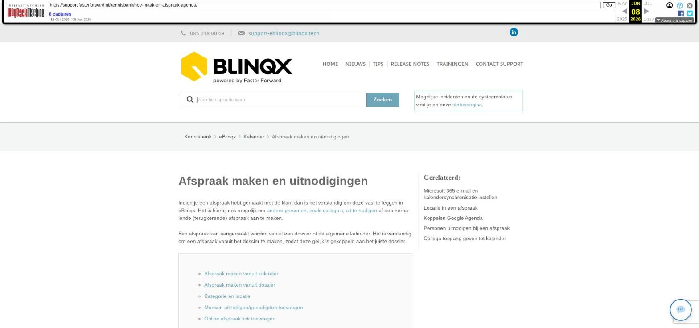

Afspraak maken en uitnodigingen
Indien je een afspraak hebt gemaakt met de klant dan is het verstandig om deze vast te leggen in eBlinqx. Het is hierbij ook mogelijk om andere personen, zoals collega's, uit te nodigen of een herhalende (terugkerende) afspraak aan te maken.
Een afspraak kan aangemaakt worden vanuit een dossier of de algemene kalender. Het is verstandig om een afspraak vanuit het dossier te maken, zodat deze gelijk is gekoppeld aan het juiste dossier.
- Afspraak maken vanuit kalender
- Afspraak maken vanuit dossier
- Categorie en locatie
- Mensen uitnodigen/genodigden toevoegen
- Online afspraak link toevoegen
- Afspraakbevestiging versturen
- Herhalende afspraak maken
- Afspraak wijzigen
- Afspraak wijzigen/verwijderen is niet mogelijk
- Uitnodiging accepteren of afwijzen
- Uitnodigingen inzien
- Afspraak maken voor collega
- Afspraak maken vanuit kalender
Je kunt een afspraak maken vanuit de kalender. De kalender kan je openen via het kalendericoon.
Wanneer je vanuit hier een afspraak maakt dan wordt deze niet direct gekoppeld aan het dossier. Ga naar de gewenste dag en klik hier op het gewenste tijdstip van de afspraak. Je krijgt dan een pop-up te zien. Hieronder vind je meer informatie over de verschillende mogelijkheden.
Afspraak maken vanuit dossier
Wanneer je de afspraak vanuit het dossier aanmaakt, wordt de taak direct gekoppeld aan het dossier. Ga hiervoor in het dossier naar het tabblad Kalender – de gewenste dag en klik hier op de gewenste tijdstip van de afspraak. Vervolgens krijg je de volgende pop-up te zien:
Vul hier alle benodigde gegevens in.
Categorie en locatie
Hier lees je meer over het aanvinken van een categorie en hier over de locatie in een taak.
Mensen uitnodigen/genodigden toevoegen
Je kunt ook mensen of collega's uitnodigen voor de afspraak. Hier lees je daar meer over.
Online afspraak link toevoegen
Wanneer de verantwoordelijke persoon in de taak gebruik maakt van Outlook en de synchronisatie met zijn Microsoft 365 kalender (voorheen Office 365) staat ingesteld dan is het mogelijk om direct vanuit de afspraak een link voor de online afspraak te genereren. Bij het maken van de afspraak komt dan de optie 'Online afspraak link toevoegen' zichtbaar. Deze kan je aanvinken. Na opslaan komt de link te staan in het veld 'Omschrijving' en in het veld 'Locatie'. De link kan je kopiëren en plakken in de e-mail die je vanuit de afspraak verzendt naar de genodigden. Ook is de link op te halen door middel van de tag [taak->locatie]. Na het verzenden van de e-mail kan je, bij een online afspraak, niet meer de verantwoordelijke van de taak te wijzigen.
Afspraakbevestiging versturen
Na het opslaan van de afspraak wordt de workflow 'afspraakbevestiging' opgestart. Loop de stappen van de workflow door om een concept e-mail klaar te zetten voor jouw klant. In deze concept e-mail staan vaak de dienstenwijzer en dienstverleningsdocumenten als bijlage. Indien deze vervangen moeten worden voor actuele versies dan kan je een e-mail sturen naar support-eblinqx@blinqx.tech inclusief de nieuwe documenten. Wij kunnen deze dan vervangen in de workflow afspraakbevestiging.
Maak je geen gebruik van de workflow afspraakbevestiging, maar is dit wel gewenst? Stuur dan een e-mail naar support-eblinqx@blinqx.tech om deze aan te vragen.
Herhalende afspraak maken
Als je een terugkerende afspraak hebt, bijvoorbeeld een wekelijks overleg, dan maak je hiervoor een herhalende afspraak aan. Deze wordt automatisch ingepland voor bijv. een heel jaar. Zo hoef je deze afspraken niet steeds handmatig in je agenda te zetten.
Dit doe je als volgt:
Open de kalender algemeen of in een dossier
Vul links alle gegevens in
Zet nu een vinkje bij 'Herhaling'
Bij de interval geef je de termijn aan (dagelijks, wekelijks, maandelijks, jaarlijks) en vervolgens krijg je verschillende velden, afhankelijk van de gekozen termijn, om de herhaling te specificeren
Als alles goed staat ingevuld sla je de taak op door middel van het opslaanicoon
Bijvoorbeeld: De komende 4 dinsdagen vindt er een overleg plaats
Let op: indien je bij de herhalende afspraak aangeeft dat het een online afspraak betreft dan wordt voor iedere afspraak een aparte e-mail met link gegenereerd. Het is niet mogelijk om hier één e-mail van te maken.
Afspraak wijzigen
Als je een afspraak wilt wijzigen, ga je naar je agenda en klik je op de afspraak. Vervolgens pas je de velden aan die je wilt wijzigen. Sla op met het opslaanicoon linksboven zodra je klaar bent.
Afspraak wijzigen/verwijderen is niet mogelijk
Wanneer je een door jouzelf aangemaakte afspraak niet kan wijzigen of verwijderen in de agenda, heb je waarschijnlijk de bijbehorende taak al afgerond. Je kunt dit herstellen door de bijbehorende taak op te zoeken in de takenlijst (filter op afgeronde taken) en deze taak te heropenen. Daarna is de afspraak in de agenda te verwijderen.
Uitnodiging accepteren of afwijzen
Het kan zo zijn dat je per e-mail wordt uitgenodigd voor een afspraak. Vanuit deze e-mail kan je jouw agenda openen.
Vervolgens kan je de afspraak vanuit de kalender accepteren of afwijzen.
De verzender van de uitnodiging krijgt via de e-mail een bericht of je de uitnodiging hebt geaccepteerd of hebt afgewezen. Bij 'Accepteren' wordt de afspraak direct in jouw agenda gezet.
Heb je al een afspraak in jouw agenda staan op de dag en tijd van de uitnodiging? Dan krijg je hiervan een melding in de e-mail.
Uitnodigingen inzien
Op het dashboard heb je de tegel Uitnodigingen. Hier staan de uitnodigingen die je hebt ontvangen. Via het kalendericoon kan je doorklikken naar het compleet overzicht. Hier staan alle uitnodigingen die binnen zijn gekomen in de e-mailboxen waar je als gebruiker toegang tot hebt.
Vanuit daar kan je via de afzender of onderwerp doorklikken naar de afspraak in de agenda. Of je kunt ze verwijderen door middel van het rode kruisje achter de uitnodiging. Een andere optie is om meerdere uitnodigingen aan te vinken door middel van de checkboxes en dan deze te verwijderen door te klikken op de knop 'Prullenbak'. Na het verwijderen vanuit deze module, blijft de afspraak wel staan in jouw kalender.
Afspraak maken voor collega
Je kunt ook een afspraak maken voor een collega. Dit doe je door jouw collega als verantwoordelijke persoon te selecteren. Degenen die in het lijstje verantwoordelijke personen staan zijn degenen die in de Takenmodule onder Persoon staan. Hier kan je lezen hoe je collega's hieraan toe kan voegen.
Afbeeldingen bij dit artikel

Schermafbeelding van de oorspronkelijke pagina

Bron: Wayback Machine-archief